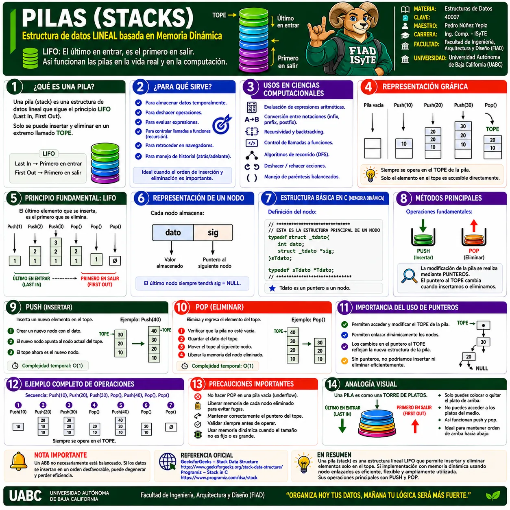
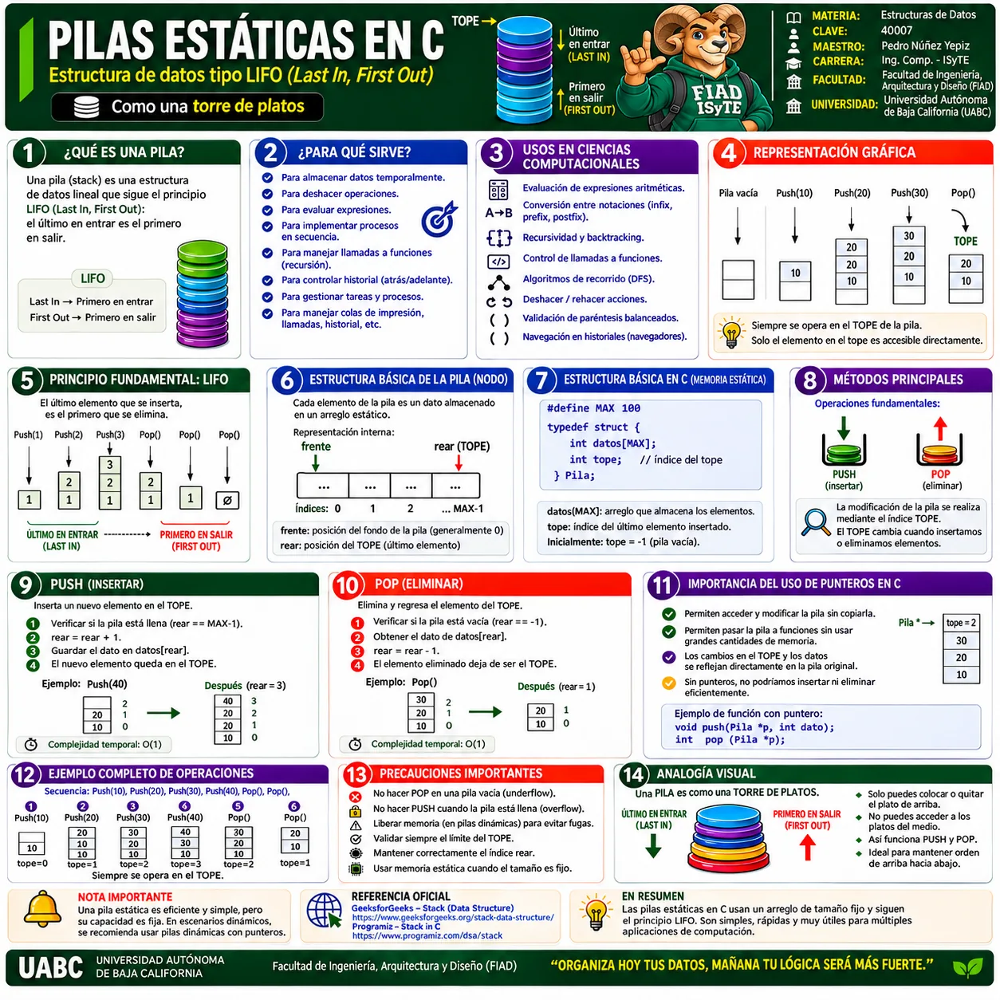
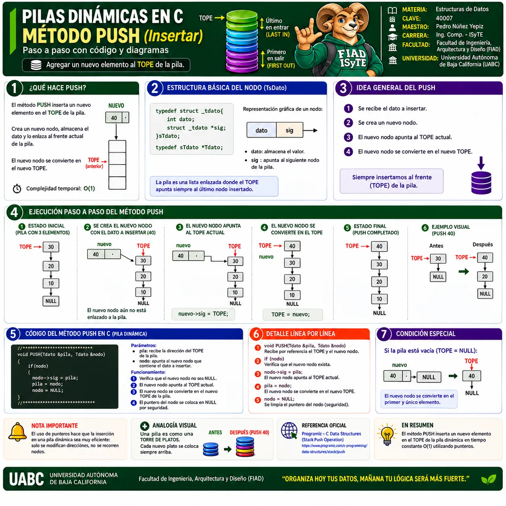
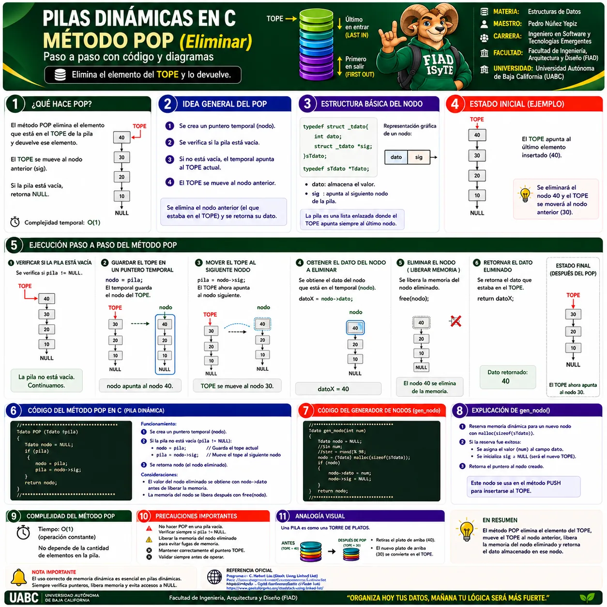
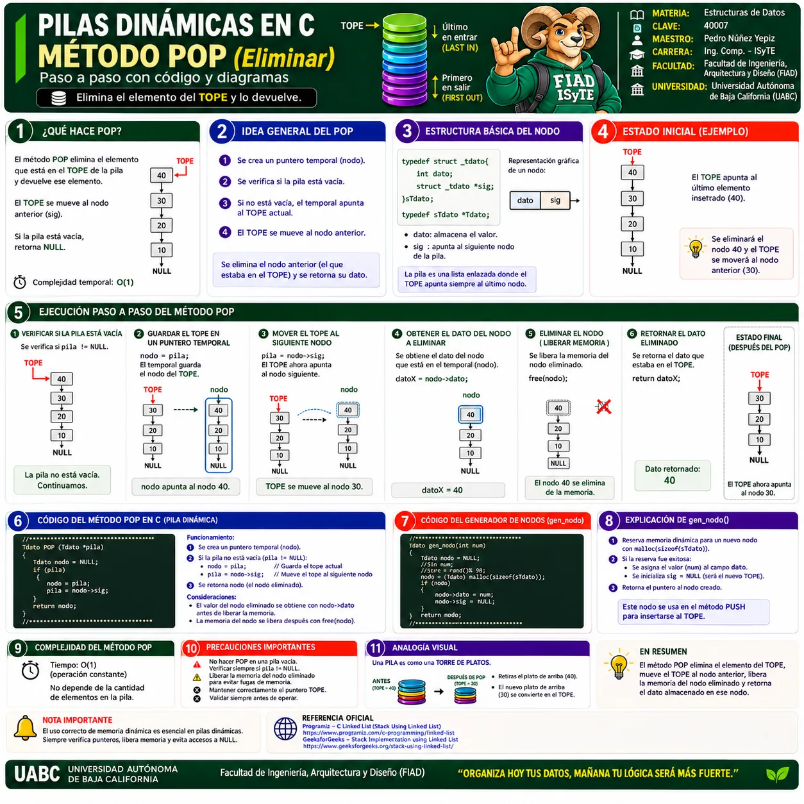

🖼️ Galería visual
Selecciona una infografía para verla a pantalla completa. Puedes usar Zoom +/−, anterior/siguiente y Esc para cerrar.

1 · Pilas (Stacks) · Visión general
Conceptos básicos, principio LIFO, operaciones PUSH y POP en memoria dinámica.

2 · Pilas Estáticas en C
Implementación de pilas con memoria estática y arreglo de tamaño fijo.

3 · Pilas Dinámicas en C · Método PUSH
Inserción paso a paso de un nuevo nodo en el TOPE de la pila.

4 · Pilas Dinámicas en C · Método POP (versión 1)
Eliminación paso a paso del TOPE de la pila, con diagramas y código.

5 · Pilas Dinámicas en C · Método POP (versión 2)
Segunda versión de la infografía del método POP con el mismo tema y diseño actualizado.
💡
RECOMENDACIÓN
Revisa primero la visión general de pilas y después las operaciones específicas PUSH y POP para reforzar el principio LIFO.
Revisa primero la visión general de pilas y después las operaciones específicas PUSH y POP para reforzar el principio LIFO.